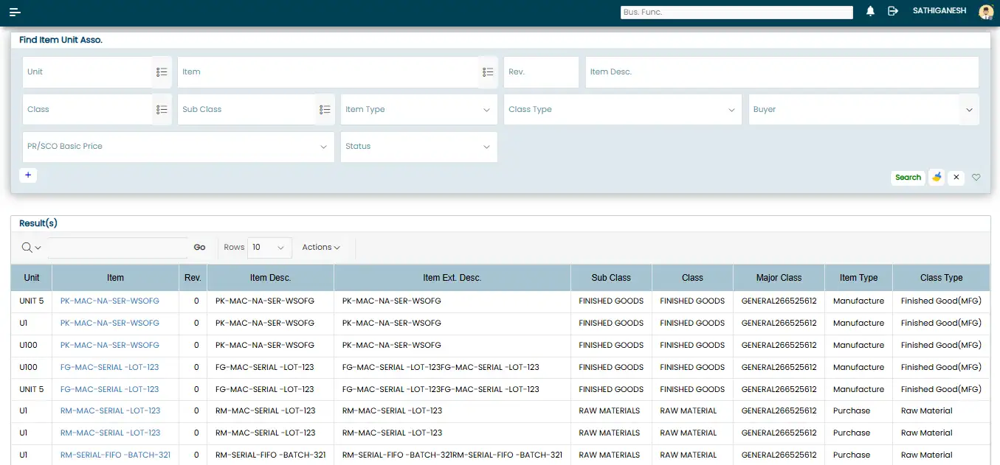
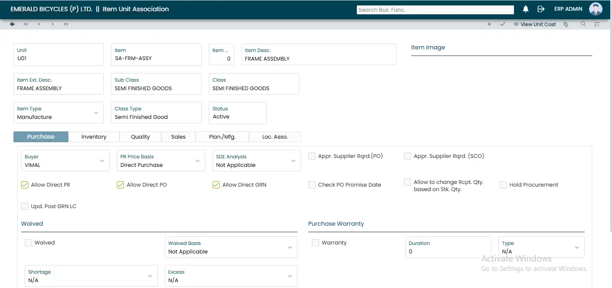
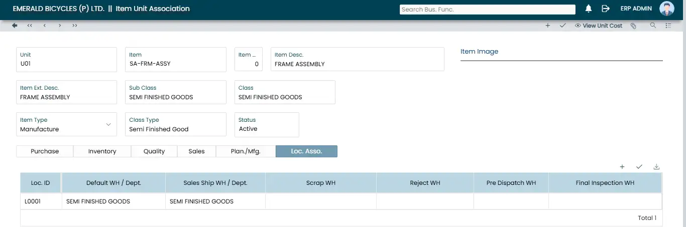
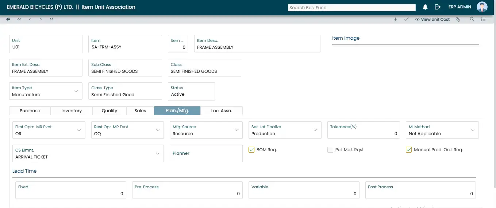
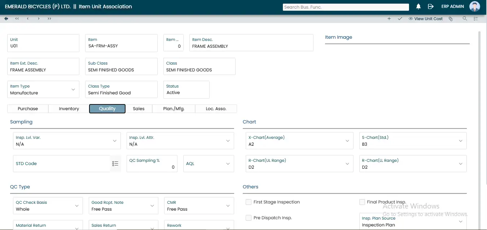

<div data-category="Inventory Control" data-title="Item Unit Association" data-updated="January 27, 2026" data-contributors="RoadmapIT" data-breadcrumb="Home,Inventory Control,Item Unit Association">
  <div class="page-content">
    <p>This is the main setup for creating the Items. User can enter all the details of the Items / Products here and associate it with the units. User cannot change or delete an Item if it has any sub-items associated with it. However, user can edit the descriptions and details of the Items as needed.</p>
    <h5>Navigation path:</h5>
    <p class="fs-6">Supply Chain Management \ Inventory \ Setup \ Item – Unit Asso.</p>
    
    <ul style="list-style-type: none; align-content: center">
      <li class="mouse-icon">Search screen displays the list of Items associated with the Unit with the relevant details and its status</li>
      <li class="mouse-icon">User can filter the respective documents by entering the search parameters at the header.</li>
      <li class="mouse-icon">On Clicking search button, system displays the results relevant to the search parameters entered.</li>
      <li class="mouse-icon">
        Using
        
        icon, entered search parameters can be cleared.
      </li>
      <li class="mouse-icon">
        To close the screen, use
        <i class="bi bi-x fs-4 mx-2 text-danger"></i>
        icon.
      </li>
      <li class="mouse-icon">
        Click
        <i class="bi bi-plus fs-4 mx-2 text-primary"></i>
        button to create new Item Unit association
      </li>
    </ul>
    
    <ul style="list-style-type: none; align-content: center">
      <li class="mouse-icon">Enter/Select the Unit.</li>
      <li class="mouse-icon">Enter/Select the Item. Subclass, Class and Major Class is automatically populated based in Item Entity Level, the class type is assigned correspondingly.</li>
      <li class="mouse-icon">Enter/Select the Buyer.</li>
      <li class="mouse-icon">
        Click
        <i class="bi bi-check-lg fs-4 mx-1 text-success"></i>
        to save
      </li>
    </ul>
    
    <ul style="list-style-type: none; align-content: center">
      <li class="mouse-icon">Enter/Select Loc ID.</li>
      <li class="mouse-icon">Enter/Select Default W/H/Dept.</li>
      <li class="mouse-icon">Enter/Select Sales Ship W/H/Dept.</li>
      <li class="mouse-icon">Enter/Select Scrap W/H.</li>
      <li class="mouse-icon">Enter/Select Receipt W/H/.</li>
      <li class="mouse-icon">
        Click
        <i class="bi bi-check-lg fs-4 mx-1 text-success"></i>
        to save
      </li>
    </ul>
    
    <ul style="list-style-type: none; align-content: center">
      <li class="mouse-icon">Check the BOM required flag if it is required to define BOM for the item.</li>
      <li class="mouse-icon">Pull Mat. Rqst. If the flag is checked, Material request created automatically for the item even if the consumption type is set as Pull.</li>
      <li class="mouse-icon">Select the First Opr. MR Evnt. and Rest Opr. MR Evnt. For Production Order Material request release option</li>
      <li class="mouse-icon">Enter the corresponding Lead Time of the Item (Fixed / Pre Process / Variable / Post process)</li>
    </ul>
    
    <ul style="list-style-type: none; align-content: center">
      <li class="mouse-icon">Select QC Check basis from the list item.</li>
      <li class="mouse-icon">Select the corresponding QC Type for the transaction under Good Receipt Note / CMR / Material Return / Sales Return / Rework</li>
    </ul>
  </div>
</div>
